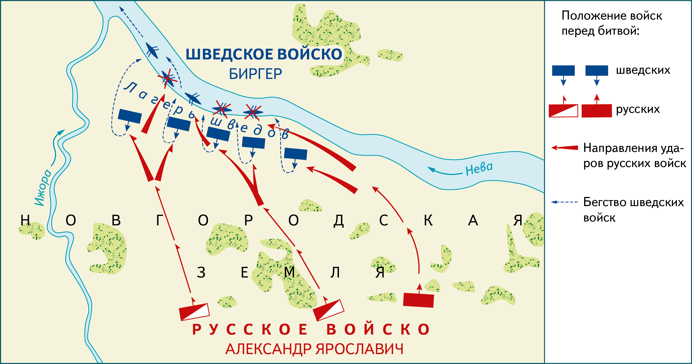
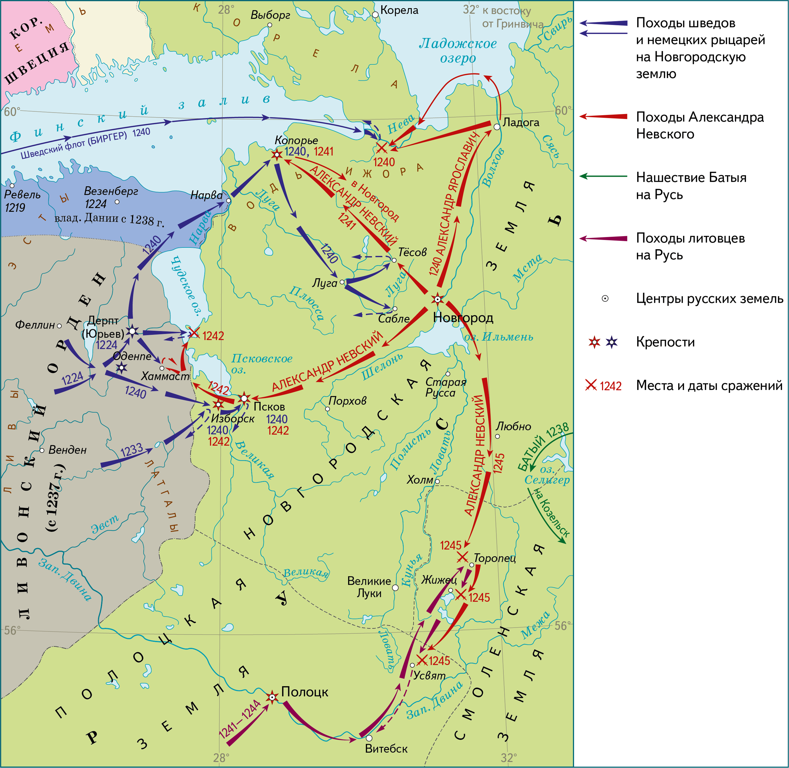
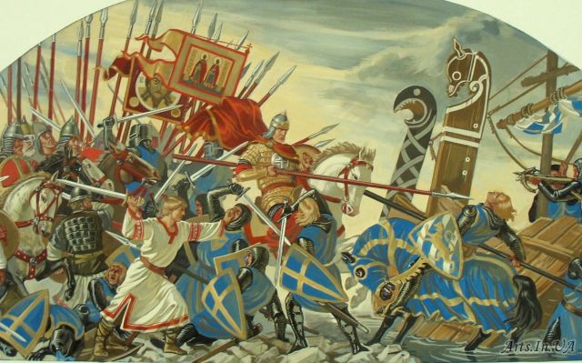
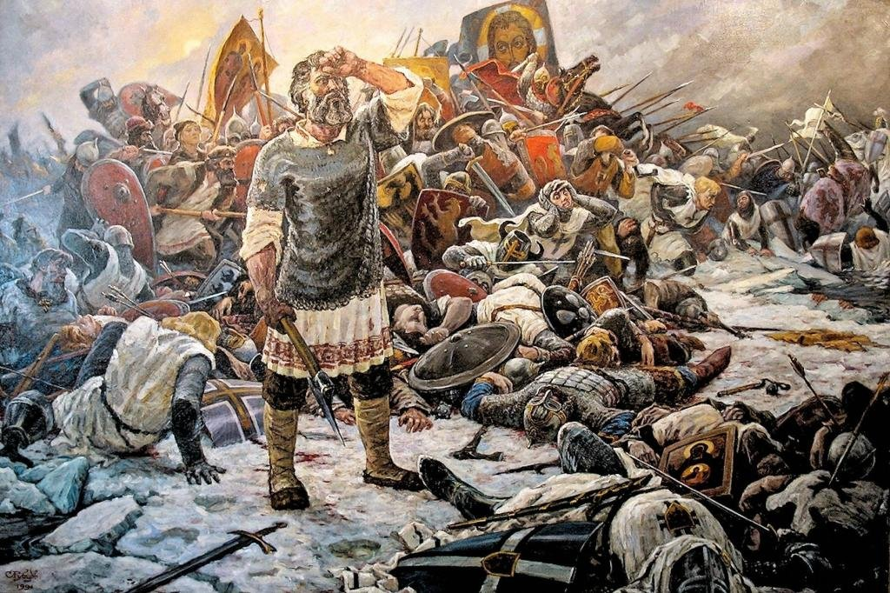
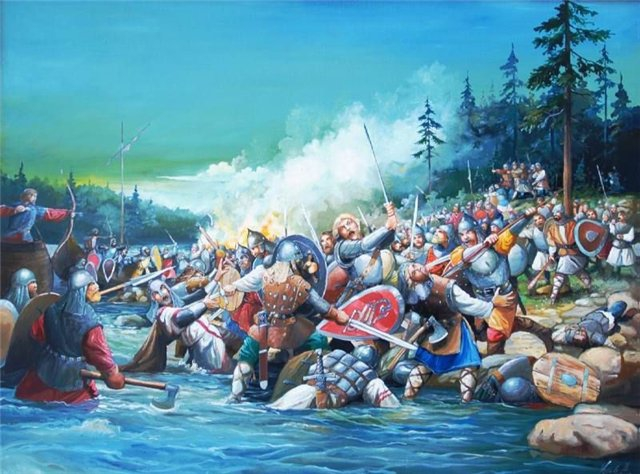
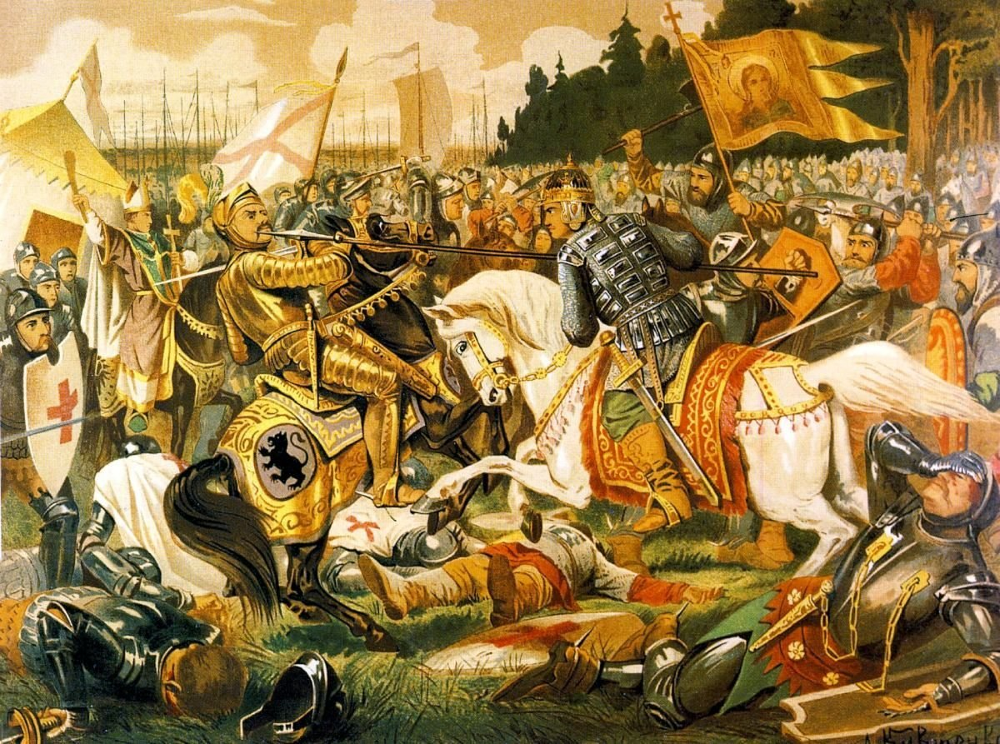
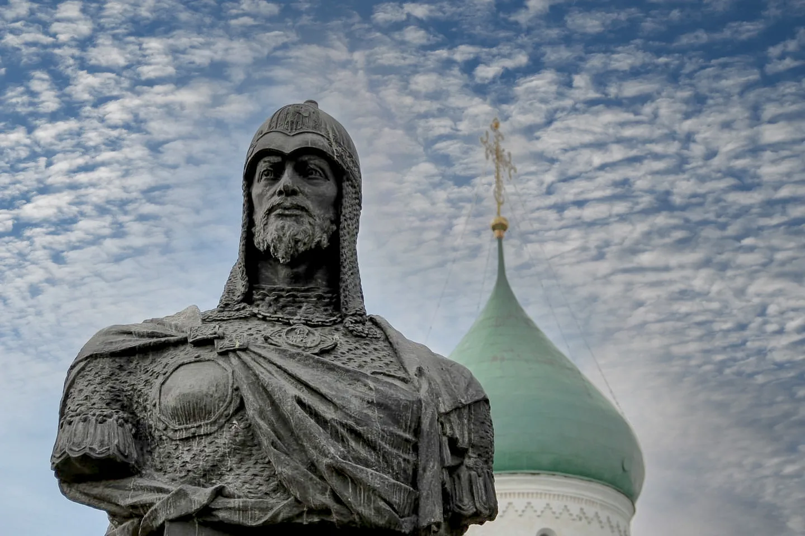

Причины битвы
В 1240 году началось нашествие Батыя. Пользуясь этими событиями, шведский король решил напасть на Русь, захватив крупный торговый город Новгород. Предпосылок для этого было огромное количество: Противник увяз в тяжелых боях, неся большие потери. Монголы уничтожили большую часть мужского населения Руси. Новгород, несмотря на то, что нашествие не видел, оставался в одиночестве, без поддержки других княжеств. В Новгороде правил молодой князь Александр Ярославич, который до этого никакими великими делами прославлен не был.
Действующие стороны
Новгородское войско: Под командованием князя Александра Невского.
Шведское войско: Включало рыцарей, наёмников и союзников.
Ход битвы
Накануне. Ранним июльским утром морской дозор, во главе с Пелгусием, старейшиной, увидел приближающиеся вражеские корабли, и передал весть князю в Новгород. Александр срочно собрал воинов Новгорода и, вместе с собственной дружиной, выступил в поход. Битва. Нападение началось с внезапного обстрела шведского лагеря лучниками. В стане врага возникла паника и неразбериха. В это время конные отряды и, одновременно, пехота, атаковали с двух сторон и по центру, разъединив неприятельское войско на части и захватив 3 корабля. Ополченцы преградили путь для отступления. Рыцари, не ожидавшие скорого нападения, не успели принять боевое расположение, поэтому и не оказали организованное сопротивление, но бились отчаянно. Оттеснённые к берегу, шведы отступили. Сражение закончилось вечером поражением шведов, которые на следующий день достигли другого берега. Похоронив убитых, рыцари отплыли домой. Войско Александра этому не препятствовало.
Интересные факты
После победы в этой битве Александра называют Невским, хотя некоторые историки оспаривают данный факт. Князь Александр с женой Биргера дальние родственники (она четвероюродная племянница). В Житии описывается об отличившихся русских воинах: О Гаврило Олексиче: сброшенный в воду, вернулся на корабль и продолжил схватку. О Якуновиче и ловчем князя, сражавшимися топорами в гуще врагов. О Якове Полочанине, отроке Савве – свалил шатёр командующего вражеского войска. И о Ратмире, слуге князя, который погиб во время рукопашного боя. Теперь на месте боя стоит Усть-Ижорский посёлок с церковью и памятником-часовней, где установлен бронзовый образ Невского. Царь Пётр I, в 1710 г., увековечил память о битве основанием Александро - Невского монастыря. Позже, когда сюда привезли останки князя, стал лаврой с Благовещенской и Фёдоровской церквями, Троицким собором и другими храмами.
Русское войско
Готовясь к внезапному нападению, Александр поспешил собрать войско, решив обойтись без владимирской дружины. Двигаясь на встречу с врагом, соединился с ладожскими ополченцами. Большую часть армии представляли конные воины, что разрешало скорое передвижение. Новгородская первая летопись отражает, по-видимому, правильное число состава армии молодого князя: княжеские дружинники - 200-400 человек; новгородские и ладожские воины – 1000; ижорцы – 600-800 воинов.Итого: русское войско состояло предположительно из 1300-2000 человек. Оружие русского дружинника: копьё-рогатина с 50 см остриём на длинном древке; дротики-сулицы для метания; 1-1,5 м меч для ближнего боя у знатных дружинников; боевой топор у простолюдинов; кистень и булава для использования в рукопашном бою; луки и колчаны.
Потери
О точных потерях так же нет правильных сведений, поэтому в летописях числа предположительные. Со стороны русского войска: погибшие состоятельные воины и дружинники – 20-26 человек, добровольцев и ладожан – мало. Шведы потеряли 300-400 воинов. Из них знатные воины составили 200 человек, которых шведы похоронили, как описывается в «Житии». Остальные тела на берегу обнаружили местные жители.
Итоги и значение
Невская Битва князя Александра Ярославовича на Неве - яркий пример того, что и с меньшими силами русские воины способны побеждать врага. Русское государство готово отстаивать собственные территории и несогласно на рабство. Побеждённым рыцарям и шведскому королю пришлось отказаться от претензий к Новгородской республике.
